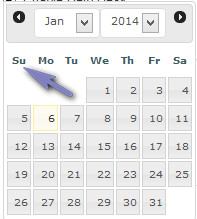
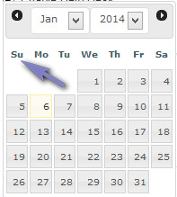

Settings
Overview
Enables updating of system settings. Please read carefully. Click example images to display full size version in new tab/window.
{kind=link}
Helpdesk Settings
Help Desk Name - Enter name for help desk.
HTTP Installation Path - http installation path to your support folder as seen in your browser address bar. NO trailing slash.
Examples might be:
http://www.example.com (if installed in domain root)
http://www.example.com/helpdesk (if installed in folder, for example "helpdesk")
Default Language - Default system language. More info on the language options here.
Admin Folder Name - You should change your admin folder name from "admin" to something unique, which can help with security. Change folder and enter new name here.
HTTP Installation Path - http installation path to your support folder as seen in your browser address bar. NO trailing slash.
Examples might be:
http://www.example.com (if installed in domain root)
http://www.example.com/helpdesk (if installed in folder, for example "helpdesk")
Default Language - Default system language. More info on the language options here.
Admin Folder Name - You should change your admin folder name from "admin" to something unique, which can help with security. Change folder and enter new name here.
Language & Template Sets
This is applicable to visitor accounts only, not admin support team accounts, which always load from the default language. Here you`ll see an option for
each language currently set and you can specify which template sets load for each language. If none are set, they always load from the default set.
Note that if imap or the API is being utilised, the system will always load from the default set unless you pass the language override with the data.
More info on the imap and API pages.
{kind=link}
Note that if imap or the API is being utilised, the system will always load from the default set unless you pass the language override with the data.
More info on the imap and API pages.
Account Settings
Enable Create Account Option - If enabled, visitor can create support account.
Enable BB Code - By default BB Code is always enabled for the admin support team. If enabled here, it is also enabled for visitors.
Send E-Mail Notification After Profile Update - Do you wish to send email confirmation after a profile is updated by a visitor?
Send Notification to Admin When New Account is Created Manually - Do you wish to receive email notification if a visitor creates a new support account?
Enable Entry Log For New Accounts - By default, do you wish to enable the entry log for new accounts? Can be enabled/disabled later.
Max Login Attempts / Ban Time (in Minutes) - Do you wish to restrict the amount of login attempts? Can help prevent bots from auto posting and help with brute force attacks. 0 for no restriction. If set, you can also set a ban time, which must elapse before login is allowed again for the entered email address. This option does NOT use cookies, nor does it restrict by IP address. This feature may be enhanced in future versions.
Minimum Length For Passwords - Max length for passwords. Should be a high number. The shorter the password, the more vulnerable it is.
Enable BB Code - By default BB Code is always enabled for the admin support team. If enabled here, it is also enabled for visitors.
Send E-Mail Notification After Profile Update - Do you wish to send email confirmation after a profile is updated by a visitor?
Send Notification to Admin When New Account is Created Manually - Do you wish to receive email notification if a visitor creates a new support account?
Enable Entry Log For New Accounts - By default, do you wish to enable the entry log for new accounts? Can be enabled/disabled later.
Max Login Attempts / Ban Time (in Minutes) - Do you wish to restrict the amount of login attempts? Can help prevent bots from auto posting and help with brute force attacks. 0 for no restriction. If set, you can also set a ban time, which must elapse before login is allowed again for the entered email address. This option does NOT use cookies, nor does it restrict by IP address. This feature may be enhanced in future versions.
Minimum Length For Passwords - Max length for passwords. Should be a high number. The shorter the password, the more vulnerable it is.
Auto Close
E-Mail Notification for Auto Closed Tickets - Do you wish to send email notification to visitors if the auto close routine closes a ticket? Note that only a single
email is sent if the routine closes multiple tickets.
Auto Close Duration - Duration that must elapse for tickets to be auto closed. Note that only tickets awaiting a visitor response are closed. Any awaiting an admin response are always assumed open until a reply is made by the support staff.
Run Now - Click to run manually. You can also set this option to run as a cron job or scheduled task.
File to run: close-tickets.php
More info on Auto Close option here
Auto Close Duration - Duration that must elapse for tickets to be auto closed. Note that only tickets awaiting a visitor response are closed. Any awaiting an admin response are always assumed open until a reply is made by the support staff.
Run Now - Click to run manually. You can also set this option to run as a cron job or scheduled task.
File to run: close-tickets.php
More info on Auto Close option here
Ticket System
Visitors Must Be Logged In To Open Tickets - If enabled, visitors must be logged in to create tickets. If not enabled, an account is created during the ticket creation process, but only if the "Enable Create Account Option" is enabled. Useful
if you want to create accounts manually and only allow enabled accounts to start tickets.
Enable Ticket History - Enables ticket history. If enabled, history is displayed in admin below ticket detailing all ticket actions. Screenshot and info here.
Do NOT Send Notification(s) if Visitor Closes Ticket with Reply - If visitor closes ticket with reply, do you still want the support team to receive email notification?
E-Mail Notification "From" Address - From email header for tickets. From address visitors see in their mail program, which also defaults to the reply-to address.
E-Mail Notification "Reply-To" Address (Optional) - Reply-to email header for tickets. If set, adds separate reply-to address. If blank, defaults to "from" address. This can be useful if you want replies to go to a certain mailbox if someone replies to ticket notifications. Note that if you are utilising the imap functions, the reply-to email will always be the reply-to address set for the imap account.
Min Digits for Ticket Numbers - Min digits for ticket numbers. If set to 0, no preceding zeros will be added.
Enable Ticket History - Enables ticket history. If enabled, history is displayed in admin below ticket detailing all ticket actions. Screenshot and info here.
Do NOT Send Notification(s) if Visitor Closes Ticket with Reply - If visitor closes ticket with reply, do you still want the support team to receive email notification?
E-Mail Notification "From" Address - From email header for tickets. From address visitors see in their mail program, which also defaults to the reply-to address.
E-Mail Notification "Reply-To" Address (Optional) - Reply-to email header for tickets. If set, adds separate reply-to address. If blank, defaults to "from" address. This can be useful if you want replies to go to a certain mailbox if someone replies to ticket notifications. Note that if you are utilising the imap functions, the reply-to email will always be the reply-to address set for the imap account.
Min Digits for Ticket Numbers - Min digits for ticket numbers. If set to 0, no preceding zeros will be added.
Dispute System
Enable Dispute System - If set, the dispute system is enabled and additional dispute options will be seen in the admin
area. Once a standard ticket is created, you have the option when viewing a ticket to change it to a dispute. Once this is done, you can give multiple visitors access to
the same ticket. This is useful for example, for gaming websites that regularly have disputes between members. More on disputes here.
After Each Visitor Response, Allow No Futher Replies Until Admin Has Responded - This disables any further visitor replies until admin has responded. This can be useful if you find that some disputes turn into slanging matches between visitors. This overrides the post privileges.
After Each Visitor Response, Allow No Futher Replies Until Admin Has Responded - This disables any further visitor replies until admin has responded. This can be useful if you find that some disputes turn into slanging matches between visitors. This overrides the post privileges.
Imap Settings
Enable Imap Debug Log - Do you wish to enable the imap debug log? Can be useful for identifying mail issues. If enabled, all imap
operations are logged to the "logs" folder, which must be writeable.
Imap Query String Parameter - Imap url parameter. A custom param will prevent anyone from accessing your imap urls. When setting up any cron jobs, make sure that you specify the correct new parameter.
Ini Set Memory Override - Will not be available on all servers. If set, will attempt to adjust memory limit (in megabytes). For advanced users only. eg: 100 = 100M
Ini Set Timeout Override - Will not be available on all servers. If set, will attempt to adjust timeout limit. For advanced users only.
Imap Query String Parameter - Imap url parameter. A custom param will prevent anyone from accessing your imap urls. When setting up any cron jobs, make sure that you specify the correct new parameter.
Ini Set Memory Override - Will not be available on all servers. If set, will attempt to adjust memory limit (in megabytes). For advanced users only. eg: 100 = 100M
Ini Set Timeout Override - Will not be available on all servers. If set, will attempt to adjust timeout limit. For advanced users only.
API Settings
Enable API Debug Log - Do you wish to enable the api debug log? Can be useful for identifying api issues. If enabled, all api
operations are logged to the "logs" folder, which must be writeable.
Enable XML Handler - Enables the XML callback options. At least one handler must be enabled.
Enable JSON Handler - Enabled the JSON callback options. The recommended option. At least one handler must be enabled.
API Key - Set API key. This ensures incoming data is valid. Enter custom random key or click to have the system randomnly generate one.
IMPORTANT:If you change the key later on, make sure your post operations all have the correct key.
Enable XML Handler - Enables the XML callback options. At least one handler must be enabled.
Enable JSON Handler - Enabled the JSON callback options. The recommended option. At least one handler must be enabled.
API Key - Set API key. This ensures incoming data is valid. Enter custom random key or click to have the system randomnly generate one.
IMPORTANT:If you change the key later on, make sure your post operations all have the correct key.
Date/Time
PHP Date/Time Format - Specify your preferred date/time display format. This takes any parameter supported by the PHP date function. More info here.
Default Timezone - Specify default timezone.
Javascript Calendar Start Day - Specify start day of week. This is only for the pop up calendars. For example, UK would be Sunday.

Javascript Calendar Date Format - Specify date format for javascript calendar.
Default Timezone - Specify default timezone.
Javascript Calendar Start Day - Specify start day of week. This is only for the pop up calendars. For example, UK would be Sunday.

Javascript Calendar Date Format - Specify date format for javascript calendar.
Attachments
Enable Attachments - If set, enables attachments. Restrictions may be in place in the free version.
Rename Attachments - When attachments are uploaded do you want to rename attachments? This can be a good idea as many people use foreign or invalid characters in file names that can cause file system issues.
Allowable File Extensions - Specify allowable extensions (with the period symbol) and pipe delimit. Example: .jpg|.zip|.gif|.rar|.png|.pdf. Note that ALL attachments should be scanned for viruses, regardless of file extension. No user file should be trusted!!!
Max Size for Attachments (Bytes) - Max size for attachments. 0 for no limit. Click "Choose" to select a pre-configured option or enter your own value.
Total Attachment Boxes - Total attachment boxes, so the maximum files someone can upload per ticket. No restrictions for admin. Note that the free version may have restrictions.
Server Path to Attachments Folder - Server path (NOT HTTP) to preferred attachments folder. NO trailing slash. This can be anywhere on your server and MUST be writeable. If you click the icon the system will attempt to calculate the path assuming the folder is located in the "content" folder. If this is the case, change the "FOLDER_NAME_HERE" value to your own folder name.
Examples of how server paths might start:
/home/server/...(Linux)
C:\windows\...(Windows)
HTTP Path to Attachments Folder - HTTP path to preferred attachments folder. NO trailing slash. This can be anywhere on your server and MUST be writeable. If you click the icon the system will attempt to calculate the path assuming the folder is located in the "content" folder. If this is the case, change the "FOLDER_NAME_HERE" value to your own folder name.
Rename Attachments - When attachments are uploaded do you want to rename attachments? This can be a good idea as many people use foreign or invalid characters in file names that can cause file system issues.
Allowable File Extensions - Specify allowable extensions (with the period symbol) and pipe delimit. Example: .jpg|.zip|.gif|.rar|.png|.pdf. Note that ALL attachments should be scanned for viruses, regardless of file extension. No user file should be trusted!!!
Max Size for Attachments (Bytes) - Max size for attachments. 0 for no limit. Click "Choose" to select a pre-configured option or enter your own value.
Total Attachment Boxes - Total attachment boxes, so the maximum files someone can upload per ticket. No restrictions for admin. Note that the free version may have restrictions.
Server Path to Attachments Folder - Server path (NOT HTTP) to preferred attachments folder. NO trailing slash. This can be anywhere on your server and MUST be writeable. If you click the icon the system will attempt to calculate the path assuming the folder is located in the "content" folder. If this is the case, change the "FOLDER_NAME_HERE" value to your own folder name.
Examples of how server paths might start:
/home/server/...(Linux)
C:\windows\...(Windows)
HTTP Path to Attachments Folder - HTTP path to preferred attachments folder. NO trailing slash. This can be anywhere on your server and MUST be writeable. If you click the icon the system will attempt to calculate the path assuming the folder is located in the "content" folder. If this is the case, change the "FOLDER_NAME_HERE" value to your own folder name.
F.A.Q
Enable F.A.Q - Enables FAQ system. This lets you add some frequently asked questions to the system.
Enable Voting System - Do you wish to enable voting system? This lets people vote on whether a question is helpful or not and is viewable in the adin control panel.
Enable Multiple Votes - If yes, people can vote multiple times. If not, a cookie is set to prevent further votes for a question. As cookies can easily be cleared, its generally pointless to try and prevent multiple votes, but this option will be useful to some.
Rename Attachments - When attachments are uploaded do you want to rename attachments? This can be a good idea if your files have foreign or invalid characters that can cause file system issues.
Total Popular Questions - Total popular questions to display on the main help desk frontend main page.
Cookie Duration (in Days) - If multiple votes are prevented via a cookie, specify how many days this cookie should remain active.
Questions Per Page - Total questions to display per page for the category view on the help desk front end when a FAQ category is clicked.
Server Path to F.A.Q Attachments Folder - Server path (NOT HTTP) to preferred F.A.Q attachments folder. NO trailing slash. This can be anywhere on your server and MUST be writeable. If you click the icon the system will attempt to calculate the path assuming the folder is located in the "content" folder. If this is the case, change the "FOLDER_NAME_HERE" value to your own folder name.
Examples of how server paths might start:
/home/server/...(Linux)
C:\windows\...(Windows)
HTTP Path to F.A.Q Attachments Folder - HTTP path to preferred attachments folder. NO trailing slash. This can be anywhere on your server and MUST be writeable. If you click the icon the system will attempt to calculate the path assuming the folder is located in the "content" folder. If this is the case, change the "FOLDER_NAME_HERE" value to your own folder name.
Enable Voting System - Do you wish to enable voting system? This lets people vote on whether a question is helpful or not and is viewable in the adin control panel.
Enable Multiple Votes - If yes, people can vote multiple times. If not, a cookie is set to prevent further votes for a question. As cookies can easily be cleared, its generally pointless to try and prevent multiple votes, but this option will be useful to some.
Rename Attachments - When attachments are uploaded do you want to rename attachments? This can be a good idea if your files have foreign or invalid characters that can cause file system issues.
Total Popular Questions - Total popular questions to display on the main help desk frontend main page.
Cookie Duration (in Days) - If multiple votes are prevented via a cookie, specify how many days this cookie should remain active.
Questions Per Page - Total questions to display per page for the category view on the help desk front end when a FAQ category is clicked.
Server Path to F.A.Q Attachments Folder - Server path (NOT HTTP) to preferred F.A.Q attachments folder. NO trailing slash. This can be anywhere on your server and MUST be writeable. If you click the icon the system will attempt to calculate the path assuming the folder is located in the "content" folder. If this is the case, change the "FOLDER_NAME_HERE" value to your own folder name.
Examples of how server paths might start:
/home/server/...(Linux)
C:\windows\...(Windows)
HTTP Path to F.A.Q Attachments Folder - HTTP path to preferred attachments folder. NO trailing slash. This can be anywhere on your server and MUST be writeable. If you click the icon the system will attempt to calculate the path assuming the folder is located in the "content" folder. If this is the case, change the "FOLDER_NAME_HERE" value to your own folder name.
SMTP
Enable Mail - Enabled system mailer. If disabled, no emails will be sent. Note that SMTP MUST be used to ensure better mail delivery. Using a good mail server like Mandrill can ensure less messages get flagged as spam. Mandrill offer 12,000 emails for free each month. There are other
paid options available, but for its pricing structure, Mandrill is hard to beat. Note that I am NOT in any way affiliated with Mandrill, its simply a recommendation.
Enable SMTP Debugging - Do you wish to enable the smtp debug log? Can be useful for identifying mail issues. If enabled, all smtp operations are logged to the "logs" folder, which must be writeable.
SMTP Host - Your smtp host. Usually server address or IP address.
SMTP Username - Your smtp username if authentication is required. Usually email address.
SMTP Password - Your smtp password if authentication is required.
SMTP Port / Security - Smtp port and security option if a security option is enabled and required. Common mail ports are 25 & 587 and 465 for SSL.
Enable SMTP Debugging - Do you wish to enable the smtp debug log? Can be useful for identifying mail issues. If enabled, all smtp operations are logged to the "logs" folder, which must be writeable.
SMTP Host - Your smtp host. Usually server address or IP address.
SMTP Username - Your smtp username if authentication is required. Usually email address.
SMTP Password - Your smtp password if authentication is required.
SMTP Port / Security - Smtp port and security option if a security option is enabled and required. Common mail ports are 25 & 587 and 465 for SSL.
Status
Enable Help Desk - Enable or disable help desk.
Offline Reason - Enter reason for why the help desk is offline.
Auto Enable on Date - If disabled and you want to re-enable on specific date, use this option.
Offline Reason - Enter reason for why the help desk is offline.
Auto Enable on Date - If disabled and you want to re-enable on specific date, use this option.
reCaptcha
The reCaptcha service is a free service from Google that can help prevent bots from auto posting to your ticket system.
Disable if User is Logged In - Do you wish to disable the captcha if a visitor is logged in?
Public Key - Enter reCaptcha API public key.
Private Key - Enter reCaptcha API private key.
Language / Theme - Select preferred language and theme. At the time of writing these docs only the options shown are available. If other languages/themes become available, add them to the following file: admin/control/recaptcha.php
Disable if User is Logged In - Do you wish to disable the captcha if a visitor is logged in?
Public Key - Enter reCaptcha API public key.
Private Key - Enter reCaptcha API private key.
Language / Theme - Select preferred language and theme. At the time of writing these docs only the options shown are available. If other languages/themes become available, add them to the following file: admin/control/recaptcha.php
Logging
Edit Footers (Commercial Licence ONLY)
Admin Footer - If available, enter preferred admin footer text.
Public Footer - If available, enter preferred public footer text.
Public Footer - If available, enter preferred public footer text.